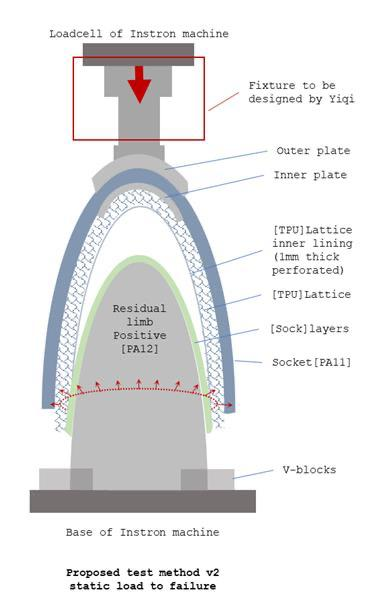
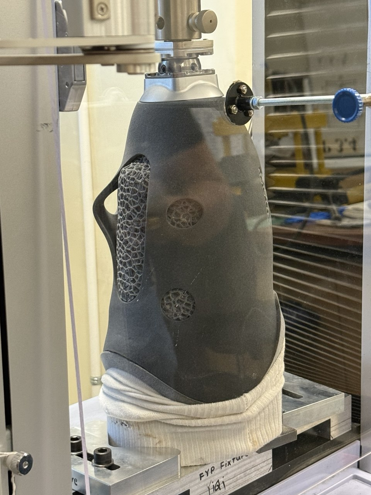
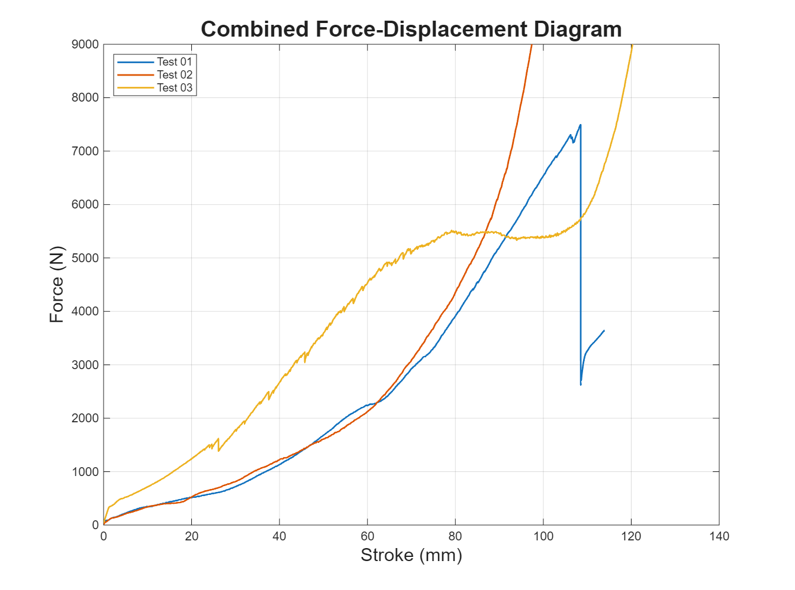
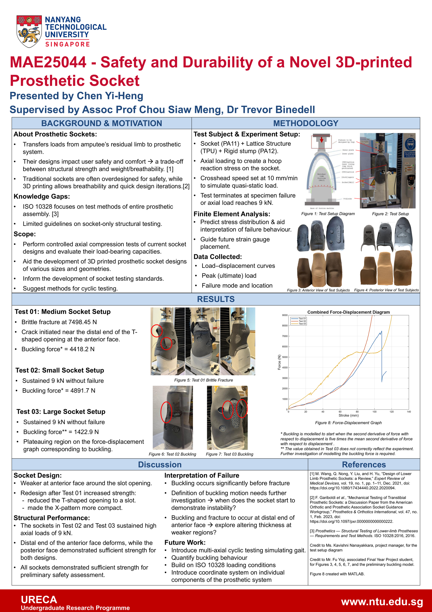
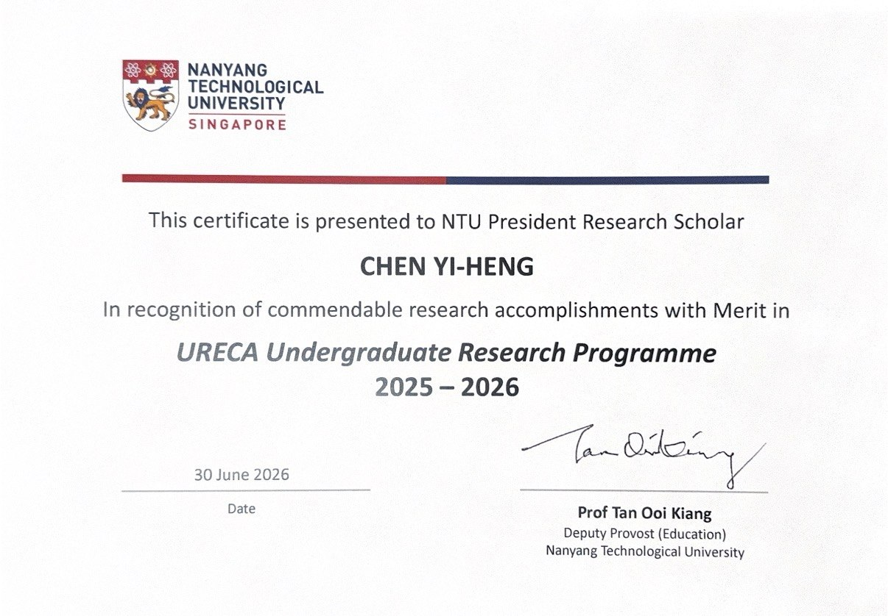

Selected Work
URECA — Prosthetic Socket Testing





Swipe or scroll horizontally for more →
Prosthetic sockets form the first interface for load transfer between the amputee and the prosthetic limb, and their design is critical for structural safety and user comfort. Through geometry design and material selection, research aims at finding ways to reduce weight while ensuring mechanical strength. While traditional laminated sockets have proven sufficient safety, additive manufacturing allows efficient design iteration and innovation in geometry. The test subject of this study is an assembly of a rigid stump, a socket, and a lattice inner layer 3D-printed with PA12, PA11, and TPU, respectively. A gap exists for the testing of transtibial prosthetic sockets, as current international standards (ISO 10328) only guide the testing of larger assemblies and have limited clarity for isolated elements.
In this project, I:
- Designed a SolidWorks fixture to mount test subjects on the Shimadzu AG-X Plus 10kN machine
- Reviewed literature on prosthetic socket testing to inform experiment design
- Devised the axial compression procedure and ran 3 tests to ultimate load under ISO 10328
- Prepared strain gauges to quantify deformation of test subjects under load
- Wrote a full research report and poster covering method, results, and suggestions for future work